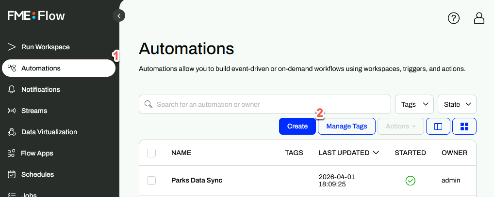
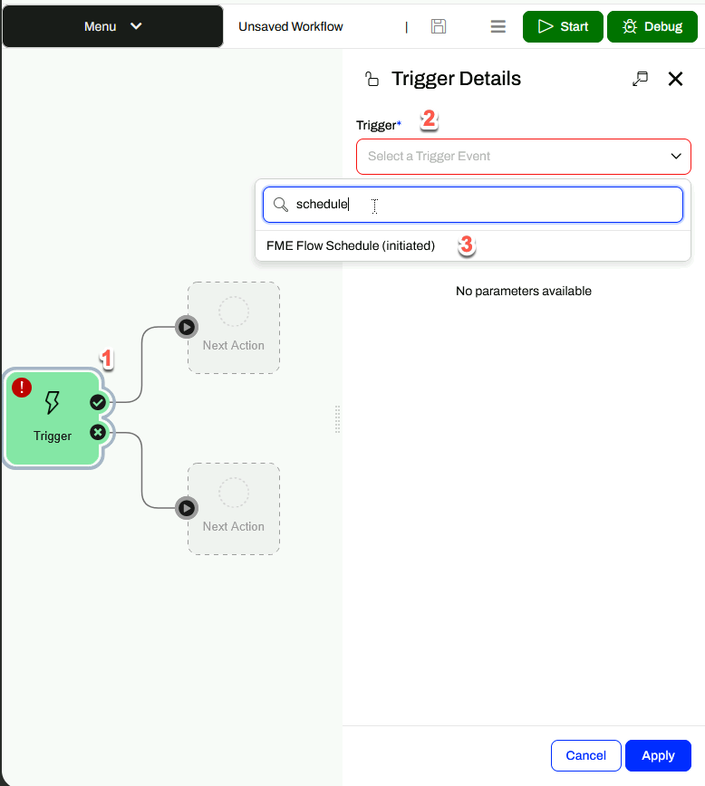
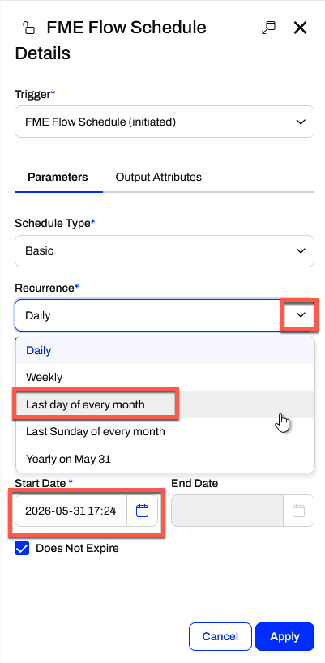
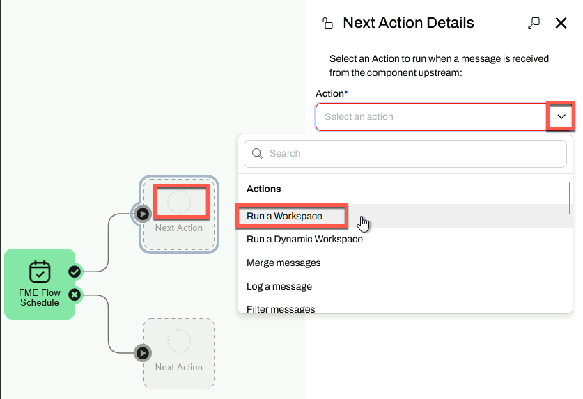
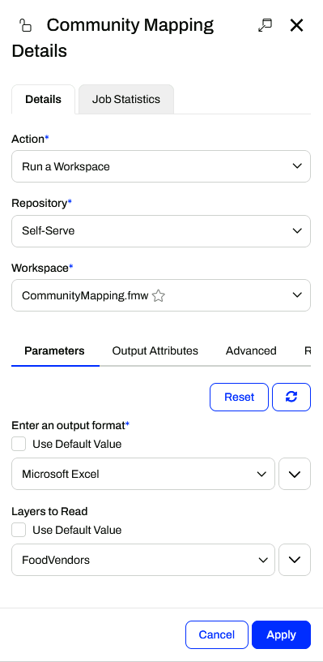

Learning Objectives
After completing this lesson, you’ll be able to:
- Explain how FME Flow Automations can save time.
- Create an Automation to run a workspace on a schedule.
- See the other Automation options available.
Instructions
In this lesson, you will:
- Scroll down to read the text below.
- Complete the exercise by following the steps.
- Complete the Quiz toward the bottom of the page.
- Optional: Let us know if you found this lesson relevant to your role by filling out the survey at the bottom of the page.
- Click 'Next' to mark the lesson complete.
Resources
- Starting workspace (should already be published to FME Flow as per the previous lesson’s instructions)
- C:\FMEData\Workspaces\IntegrateDataWithTheFMEPlatform\publish-a-self-serve-workspace-to-the-web-complete.fmw
- CommunityMap.gdb.zip
- C:\FMEData\Data\CommunityMapping\CommunityMap.gdb
Scenario

Frank's colleague Fatima, a Business Data Analyst at the city's Business License Office, has asked to receive a monthly Excel report of all food vendor data without any manual effort from Frank. His workspace already reads feature classes from the community mapping geodatabase and writes them to a user-selected output format. To fulfill her request, Frank builds an FME Flow Automation that runs his workspace on a schedule and emails Fatima the results automatically.
In this exercise, you will:
- Create an Automation in FME Flow with a Schedule trigger set to run on the last day of every month.
- Add a Run a Workspace action to execute the community mapping workspace with specific parameters.
- Add an External Action to deliver the results by email or log a message.
- Start the Automation and use the Trigger button to test it immediately.
1) Open FME Flow Automations
- Log in to your FME Flow instance (2026.1 or later).
- Click Automations in the left navigation menu.
- Click Create

- If the Get Started window appears, click Close.
2) Configure the Schedule Trigger
- Click the lightning bolt icon on the Trigger on the canvas to open the Trigger Details pane.
- In the Trigger drop-down, select FME Flow Schedule (initiated).

- Keep Schedule Type set to Basic.
- Set Start to the last day of the current month.
- Set Recurrence to Last day of every month.
- If this option does not appear, confirm that your Start date is set to the last day of a month.

- Click Apply.
- Click Menu > Save As, name it Automation Monthly Food Vendor Update, and click OK.
3) Add a Run a Workspace Action
- Click the empty circle icon above Next Action on the canvas to open the Next Action Details pane.
- In the Action drop-down, select Run a Workspace.

- Set Repository to Self-Serve.
- Set Workspace to CommunityMapping.fmw.
- Under Parameters, set Output Format to Microsoft Excel and Feature Types to Read to FoodVendors.
- You may have to disable Use Default Value.

- Click Apply.
- Two new Next Action options appear on the canvas — one for the ✔ (Action Succeeded) port and one for the ✗ (Action Failed) port.
4) Add an Email External Action (Optional)
- Click the Next Action icon from the ✔ (Action Succeeded) port.
- In the Action drop-down, select Email (send).
- If you prefer not to configure email, select Log a message instead, enter "Hello World" for the Formatted Message, and proceed to step 5.
- Click Load Template and select the appropriate template for your email provider.
- Fill in the following fields:
| Field |
Value |
| Email To |
An email address you monitor |
| Email From |
Your email address |
| Email Subject |
Monthly Food Vendor Report |
| Email Body |
Your message to the recipient |
| Attachment |
$(FME_SHAREDRESOURCE_DATA)/CommunityMapping.zip |
- Click Validate to test the connection.
- Click Apply.
5) Start and Test the Automation
- Click the Save icon in the toolbar to save your Automation.
- Click Start in the top-right corner to start the Automation.
- Double-click the FME Flow Schedule trigger on the canvas to open its details.
- Click Trigger to run the Automation immediately for testing.
- If you used Log a message, go to Menu > View Log Files > action_fmelogaction.log to confirm the Automation ran.
Tips & Tricks
- Automations takes data integration to the next level. Designing your FME workspaces with this in mind lets you create reusable, modular, and integrated applications for your organization, rather than one-off, single-use workspaces for every workflow. Automations support automated schedules and event-driven workflows that can:
- Eliminate manual intervention.
- Remove schedule-based delays.
- Ensure data is always current and available.
- Automations let you implement the enterprise integration patterns popularized by Gregor Hohpe and Bobby Woolf: repeatable solutions to commonly occurring problems encountered when integrating applications or systems.
- Automations are composed of three objects:
- Triggers listen for and receive messages from an external client or within FME Flow. Every Automation begins with a Trigger.
- Actions process messages between triggers and external actions in an FME workspace or through another tool.
- External Actions send a message to an external client or another process in FME Flow. What happens afterward is no longer part of this Automation.
- If you use Gmail or another email service that requires two-factor authentication, you must create an app password to allow FME Flow to access your account. Use this app password in place of your regular password. Create a Gmail App Password
Leave Us Feedback on This Lesson